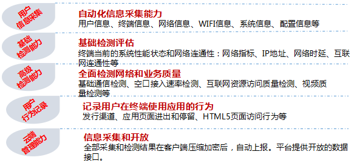
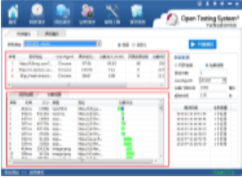
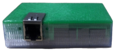
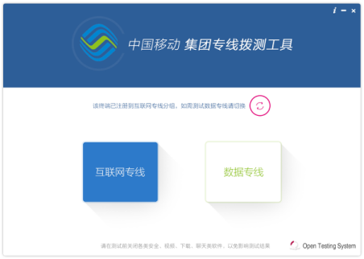
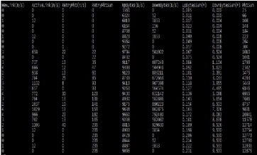
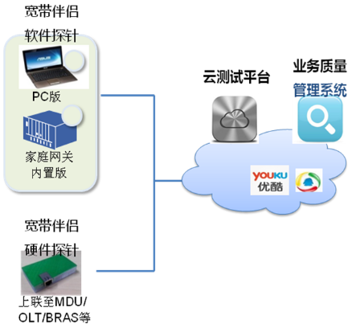

基于SDK的互联网“端-管-云-台”端到端质量监测/拨测工具及服务
产品概述
该产品是为互联网应用开发商提供的轻量级SDK开发包，它能够在用户无感知状态下实现业务质量及用户行为等多维度的信息采集。集成方式方便快捷。支持Android、iOS操作系统。
主要功能

使用场景
能够满足互联网应用业务质量评测、互联网平台的健康度、现网服务接入质量、日常运营数据采集等监测需求。
解决现网问题
能够更准确评估互联网应用的业务真实用户体验，量化评估互联网应用及业务平台质量。协助运营商进行网络优化。

宽带伴侣是面向家庭宽带和集团专线业务，实现自动化的、基于用户感知的业务品质测试和分析工具，由测试探针、云测试平台和业务品质管理平台构成。测试探针可内嵌在PC/APP/机顶盒/家庭网关等多种用户接入设备上，也可灵活部署在OLT/BRAS/IDC等网络节点，可根据业务品质管理的要求，对家庭宽带和集团专线的关键业务性能指标进行客观的、按需的监测，并对造成业务品质和用户体验下降的可能因素进行分析。

宽带伴侣-家宽软件探针

宽带伴侣-硬件探针

宽带伴侣-集团专线测试工具

宽带伴侣-嵌入式软件探针
宽带伴侣可用于以下场景：
1、装维环节
用户侧将线路及设备安装调试完成后，使用宽带伴侣探针，对下载速率、网站访问时延等指标进行测试。
对用户，验证新开线路质量是否达标；对中国移动，提供网速、时延等业务质量数据。
2、日常拨测

对用户，感知宽带业务质量，参与品质提升计划；对中国移动，提供业务质量数据，性能预警。
3、辅助定位
对运维部门，发现质量问题或用户投诉后，分段检测业务质量，辅助进行问题定位。
缺乏获取真实用户体验数据的有效手段，受限于采样数量和方式，数据并不能完全反映真实情况
目前采用专用测试工具的方式，成本较高，测试管理和执行不灵活
对用户体验问题缺乏有效的分析手段和数据支持
家庭宽带、集团专线业务质量指标测试
宽带业务质量统计分析
测试能力统一管理、可定制化扩展
低成本、轻量级的测试工具，测试过程用户无感知
采用众测模式，获取数据真实有效
平台支持千万级测试探针规模；
家庭宽带业务质量指标测试：互联网资源访问、互联网资源下载、视频业务质量
集团专线业务质量指标测试：时延、成功率、丢包率
软件探针（PC版、家庭网关内置版、APP）
硬件探针
云测试平台
宽带业务质量管理平台
家庭宽带、集团专线（互联网专线、数据专线）
该产品是面向业务质量和移动互联网网络测试的专业工具。可贴近用户的真实使用场景，实现真正以“用户”为中心的端到端业务质量评测。具备基础通信、网络性能、用户体验、终端性能等测试能力，能够从用户的角度反应实际业务、网络的运行情况和性能质量。
网速测试、网站测试、切换分析、CSFB测试、终端测试、DNS测试
可用于4G用户体验评测、终端综合性能评估、网络接入质量评估、 载波聚合网络覆盖评估、网络加速效果评估等
支持搭载Android 2.2、iOS7.0及以上操作系统的智能终端
1.传统测试手段与用户真实使用感受存在偏差
2.传统测试方法成本高、效率低